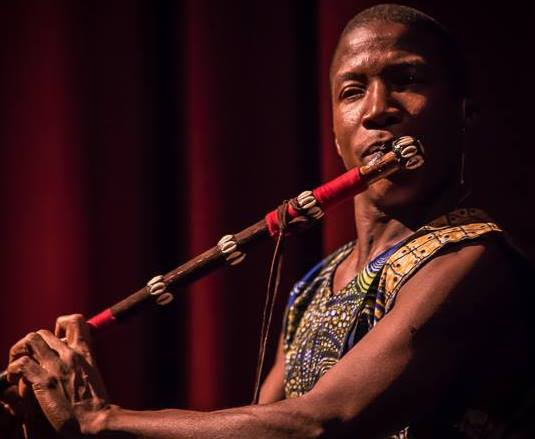

One World Dance & Drum exists to bring the power and magic of dance, drum and intercultural experiences alive and real for all people. Through our classes, programs, and services, we ignite awareness, generate community and bring forward the possibility of global transformation.
The following fundamental values are at the heart of who we are:
Being true to these values, we provide opportunities for people to come together to learn, grow and celebrate being alive. Inspired by the human spirit, it is our honor and joy to do God’s work … we stand for the transformation of life itself!
Sarah Lee Parker Mansare graduated with honors and a Bachelor of Science degree in Health and Wellness (Exercise Science, Public Health, Youth Studies and Nutrition) from the University of Minnesota. She has been a member of the University of Minnesota Repertory and Hamanah Don Dance Companies, managed the Fitness Program at the West Seattle YMCA, and is currently a Personal Trainer and Life Coach working with people one on one to heal, expand and transform their physical, mental and emotional capacities.
When Sarah Lee first discovered West African Dance in1993, she was hooked immediately, and spent the next decade studying with dozens of well-known instructors from various parts of West Africa. In 2004, Sarah Lee’s passion for this art form took her to Senegal and then Guinea West Africa on a dance intensive with her primary instructor: Master Dancer Youssouf Koumbassa.
She has since returned to Guinea eleven more times for multiple months at a time to dance and learn from some of the best West African dancers and instructors in the world. Each year she delves into intensive personalized study in various parts of Guinea with artists such as Alseny Bangoura, Mamadama Camara, Aly Mara and Sorel Conte, all of whom are Principal Dancers with West Africa's finest performance company Les Ballets Africains.
From October 2011 to June 2012 Sarah Lee Parker was blessed with her ninth opportunity to live and study dance in Guinea, West Africa. While there, her insatiable passion and hunger to learn from these incredible artists took her to the far reaches of Haute (high) Guinea, to the center of the capital city, Conakry, and many places in between.
Sarah Lee spent these intensive 8 months studying with old traditional masters and young contemporary performers alike. Through one-on-one private classes, and by rehearsing as a member of the high level performance company Wassa So, Sarah Lee grew tremendously as a dancer. This incredible immersion experience has deepened her intimate knowledge of the dance steps, the music, and the culture and people from which they came.
Sarah Lee has fallen completely in love with the people, the culture and the music and dance of Guinea West Africa. She is now living in Seattle, powerfully committed to sharing her love and knowledge of this amazing culture, building a bridge between these two very different cultures. She teaches weekly classes in the community, as well in the dance department at the University of Washington.
A true healer in the best sense of the word, her infectious enthusiasm, playfulness and generosity of spirit, make her the perfect ambassador for the West African traditions that she shares from her heart.
Mamady "Tambou” Mansaré III, 4th generation Master Flute player from Guinea West Africa is known across Africa and around the world for his extraordinarily beautiful musicianship and artistry. In addition to being a world class dancer, singer, and acrobat for Les Ballets Africains, the most renowned and prestigious performance company in all of West Africa, he holds the noble position of principal flute player in this revered company. In fact, he, his father (from 1988-2004), and his grandfather (from 1958-1988) are the only people who have ever had the honor of holding this position in this acclaimed company. In Guinea, the Mansaré family is known and regarded as a valuable national treasure.
Since he was born, Mr. Mansaré has embraced his familial role and exceptional talent as historian, story teller, musician and dancer, serving his country first in several private dance and drum companies, next with the Theatre National de Guinea (1999-2000), then with the National Ballet Djoliba (2001-2004) and now with the largest and most acclaimed company in Africa, Les Ballets Africains (2004-present). Mamady regularly works with many of Africa’s finest individual master artists such as Mamady Keita and Famadou Konate, and currently is a member of the director team of Les Ballets Africans as the ‘Registeur Adjoint’, working closely with Hamidou Bangora and the rest of the directors for this great company.
Mamady is a sought after recording artist in West Africa, and his and his father’s music can be heard on many labels and with many internationally known and celebrated artists, such as Momo Wandel Soumah’s albums Matchowe, Afro Swing and Momo Le Doyen; Mamady Keita’s albums Mögöbalu, Mamady Lèè and Mandeng Djara; Les Ballets Africains’ albums La Mémoire du Manding, Héritage, and Silo (and others); Les Espoirs de Coronthie’s albums Tinkhinyi (and others); Moussa "Tanga” Camara’s album Sabou youma vol.1; Kelontan Cissohko’s album Koraba; and even in the films of French director Laurent Chevalier Djembefola, Mogobalu, Momo Le Doyen et l’Expérience Africaine.
Born in 1976 in Kissidougou, in the Forest Region of Guinea, Mamady is a member of the Malinke ethnic group. The entire paternal line of the Mansaré family, are a clear and famous example of the way ancient West African traditions, customs and knowledge have been passed from one generation to the next for hundreds and hundreds of years. Mr. Mansaré is a direct descendant of Sundiata Keita, the founder of the Mandingo Empire of the thirteenth century, and since his birth he has been rooted in the stories and traditions of his culture. Now his government and the people of Guinea count on him to chronicle and keep the details of these stories alive for the world. He takes pride in his role as a cultural ambassador, not only as a beautiful performer and recording artist, but also by teaching classes and workshops. For years Mr. Mansaré has been organizing and leading training courses and cultural intensives in both the capital city Conakry, as well as in his native village deep in the interior of Guinea. He works with students from all over the world: Mexico, United States, France, Japan, Netherlands ...etc., to share with them the power and exhilaration of his grand culture. Students and audience members from across the globe regard him as an exceptional teacher, and charismatic performer, and an enormous resource of traditional information.
Lastly, Mamady’s ancestral heritage, his time spent in the untouched traditions of central and eastern Guinea, and his many years of participating in the top performance companies in Guinea, has allowed him to become a fine costume and instrument designer. Directors of dance and drum performance companies all of the world now come to him to build instruments for them, and design specific traditional costumes for their productions. His profound and intimate understanding of history of West Africa’s music, dance and culture make him one of the most sought after instrument makers, costume designers artists and teachers in Guinea.
“Sarah Lee is an incredible teacher. I have begun to learn about the great tradition of West African Music and dance in a context that includes the interpretive skills and artistry of someone who has found a way to present West African culture to Americans in a meaningful and respectful format.”
“Sarah Lee is an energetic, fun, skilled teacher, dancer, and fitness specialist. She cracks me up and helps everyone feel welcome. I love her warm-ups that address the whole body. Sarah Lee does an excellent job of making these African dances accessible to a broad range of people. I have been going to her classes for years and love the music and dance of Guinea. These classes are more than just classes, they are a community of dancers and drummers who get together to learn and have fun. Its great exercise, too!”